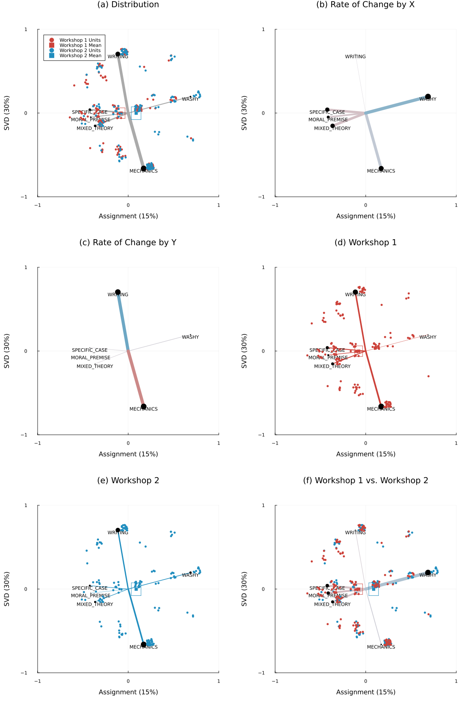

What kind of feedback are students individually receiving across their workshops?
ena =ENAModel( data, selected_feedback, connected_assignments, connected_assignments, dropEmpty=true, rotateBy=most_variance)# apply a little jitter before plotting to keep points from overlappingena.accumModel[!, :pos_x] .+=0.075.* (rand.() .-.5)ena.accumModel[!, :pos_y] .+=0.075.* (rand.() .-.5)plot(ena)
How did feedback on the first workshop compare to the second, on average?
ena =ENAModel( data, selected_feedback, separate_assignments, separate_assignments, dropEmpty=true, relationshipFilter=biplot_only, rotateBy=first_vs_second)# apply a little jitter before plotting to keep points from overlappingena.accumModel[!, :pos_x] .+=0.075.* (rand.() .-.5)ena.accumModel[!, :pos_y] .+=0.075.* (rand.() .-.5)plot(ena)

How did feedback given by different graders compare, on average?
ena =ENAModel( data, selected_feedback, separate_assignments, separate_assignments, dropEmpty=true, relationshipFilter=biplot_only, rotateBy=grader_differences)# apply a little jitter before plotting to keep points from overlappingena.accumModel[!, :pos_x] .+=0.075.* (rand.() .-.5)ena.accumModel[!, :pos_y] .+=0.075.* (rand.() .-.5)plot(ena)